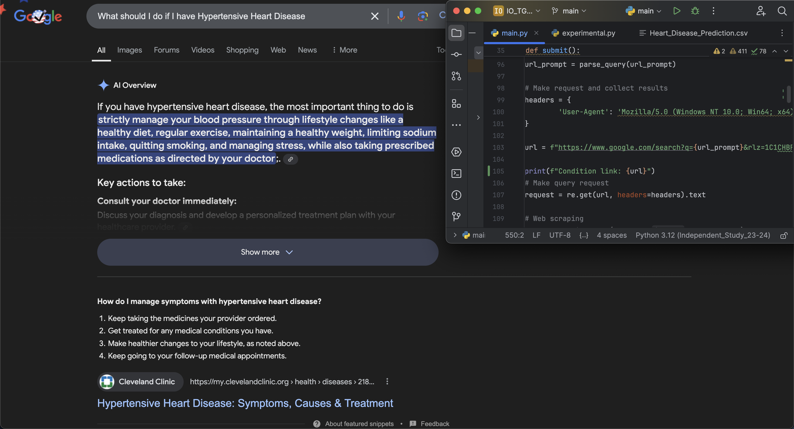

Heart Disease Prediction & Treatment
program output

code-generated Google search of a disease the program predicted for a user
program description
I worked on this program with a friend under the plan that he'd work on the app's UI and I the backend. essentially, the program will begin by prompting the user for a plethorea of medical information (such as age, blood pressure, etc.) and then it will analyze the data and predict whether the user has a high or low chance of having the disease
once the presence of a disease has been predicted, the program will use this assessment, in conjunction with the provided information, to determine which specific disease the user has by doing an automated Google search. once the condition is identified, the program will preform another search to identify a treatment plan and provide the user with it
technologies used